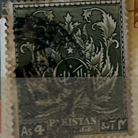
| SOURCE | TITLE| IMAGE MATCH | click to source page |
| HipStamp | Pakistan; 1951: Sc. # 58: Used Single Stamp + | Asia - Pakistan, General Issue Stamp / HipStamp | 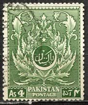 |
| eBay | Lot of 125 Pakistan Postage Stamps | eBay | 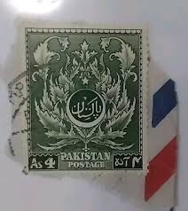 |
| eBay | Rhodesian Bird Postal Stamps for sale | eBay | 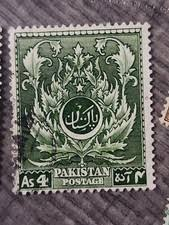 |
| BidCurios | Pakistan Archives - Page 2 of 6 - BidCurios | 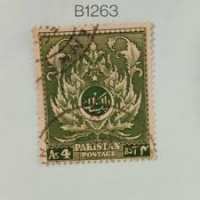 |
| eBay UK | PAKISTAN 1951 - 4th ANNIV. OF INDEPENDENCE-SARACENIC LEAF PATTERN-USED 4a STAMP | eBay UK | 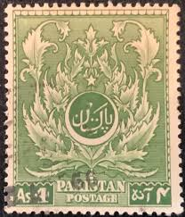 |
| geohyst.ru | Пакистан (СМ, 1988) | Историческая география | 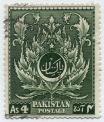 |
| Char Ana” I painted this with my all heart and give tribute to the old postage system of our country 💚 When letters carried real emotions, not emojis… when a single stamp | 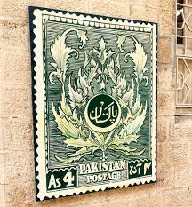 | |
| kitantik | 1951 PAKİSTAN DAMGALI PUL - Efemera - kitantik | #19822412000444 | 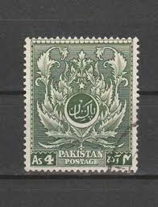 |
| Osta | 52-15 varia leiunurk (204344260) - Osta.ee | 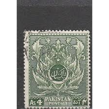 |
| Tara Al-Bazi (taraalbazi01) – Profile | Pinterest | 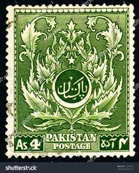 | |
| Todocolección | bahawalpur - ciudad de pakistan - 1 anna - Buy Stamps from other Asian countries on todocoleccion | 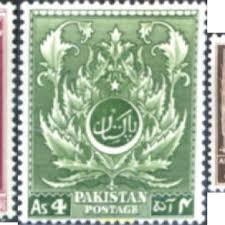 |
| Osta.ee | Leiunurk 2-523 pakistan (247768969) - Osta.ee | 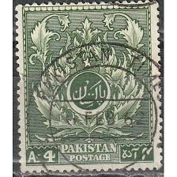 |
| Dreamstime.com | 205 Pakistan Sketch Stock Photos - Free & Royalty-Free Stock Photos from Dreamstime | 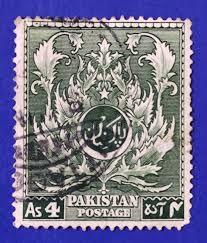 |
| CollectorBazar | Pakistan - Old stamp as per scan (P-026/R) | 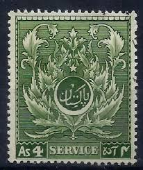 |
| Osta | 34-19 varia (206531784) - Osta.ee | 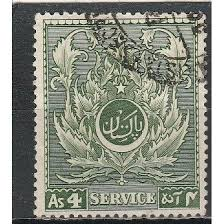 |
| Dreamstime.com | A Vintage Postage Stamp from Pakistan. Editorial Photography - Image of isolated, value: 350635482 | 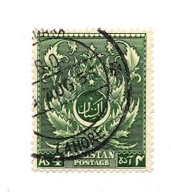 |
| sam725 system (sam720725) - Profile | Pinterest | 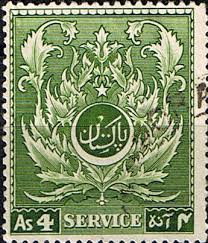 | |
| PostBeeld.de | Briefmarken aus Pakistan - PostBeeld.de - Online Briefmarken kaufen - Sammeln | 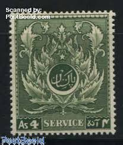 |
| HipStamp | Pakistan #58 Leaf Pattern Used | Asia - Pakistan, General Issue Stamp / HipStamp | 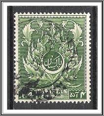 |
| Bộ K4 Genouilly & Amedee Courbet in đè (có lỗi) | 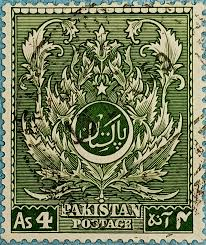 | |
| vividagallery.com | Pakistan Emblem Annas Green Floral Urdu Islamic Art Independence Shower Curtain by Vivida Gallery - Vivida Gallery | 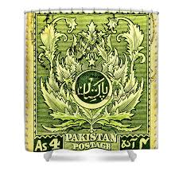 |
| Alamy | Independence day of pakistan hi-res stock photography and images - Alamy | 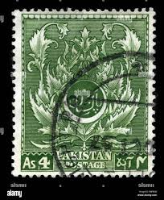 |
| Мешок | ПАКИСТАН. 1995 СТАНДАРТ. НАЦИОНАЛЬНЫЙ ОРНАМЕНТ **» на Мешке | 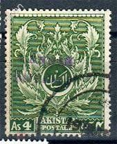 |
| Stamp Community Forum | Can Anyone Identify These Stamps - Stamp Community Forum | 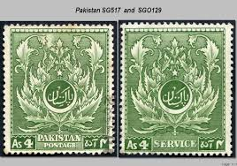 |
| Pakistani postage stamp 🇵🇰 With poster colours . . . . . . . . . #habbasart #habbasphotography #HAbbas #habbas29 #art#artist #drawing #artfan #pakistan # Pakistani # Pakistanistemp #stemp #stempdrawing # | 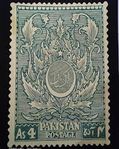 | |
| YouTube | Nice Old Pakistan Postage Stamps - YouTube | 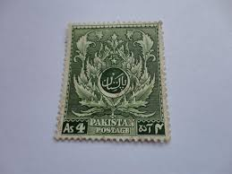 |
| Mystic Stamp | O33 - 1951 Pakistan - Mystic Stamp Company | 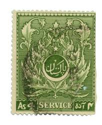 |
| CollectorBazar | pakistan EARLY 4 ANNA SERVICE URDU MONOGRAM UNMOUNTED MINT | 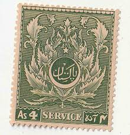 |
| eBay UK | 2 Stamps Pakistani Stamps (1947-Now) for sale | eBay UK | 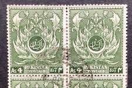 |
| Dreamstime.com | Green Pakistan Stamp with Leaf Pattern Editorial Stock Image - Image of patterned, pattern: 160067579 | 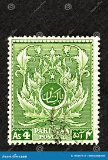 |
| Osta | Pakistan " ORNAMENT " 1951 MNH (206588737) - Osta.ee | 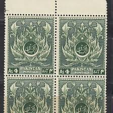 |
| esam.ir | تمبر کلاسیک پاکستان با طلق محافظ | 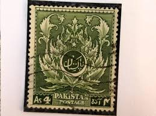 |
| iStock | Pakistan Stamp Stock Photo - Download Image Now - Antique, Floral Pattern, Green Color - iStock | 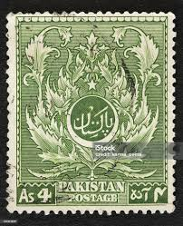 |
| Shutterstock | 4+ Thousand Stamp Pakistan Royalty-Free Images, Stock Photos & Pictures | Shutterstock | 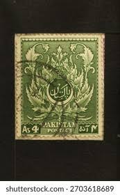 |
| Pakwheels | My Stamp Collection -CivicLover88- - Spotting / Hobbies & Other Stuff - PakWheels Forums | 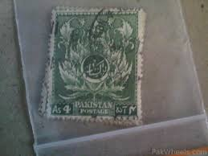 |
| More from our EID event #pleven #eid #pakistan | 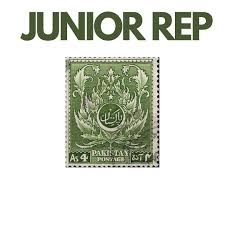 | |
| eBay UK | PAKISTAN, 4TH ANNIVERSARY OF INDEPENDENCE 4As POSTAGE STAMP, RARE, 1951 | eBay UK | 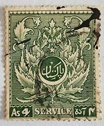 |
| Todocolección | sellom10 paisa - pakistan - Buy Stamps from other Asian countries on todocoleccion | 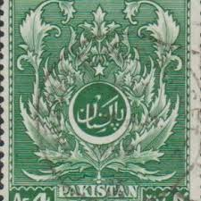 |
| Shutterstock | Pakistan Circa 1951 Green Color Postage Stock Photo 205624576 | Shutterstock | 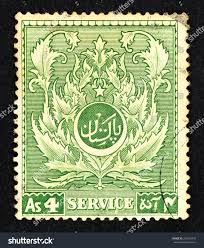 |
| Bob Shop | Pakistan - Pakistan, Scott #58,1951,MNH,toning on back of one stamp,CV$10.00 block of 6 stamps was listed for 90.00 on 1 Jul at 08:02 by StampsMan in South Africa (ID:647109748) | 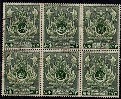 |
| eBay UK | 2 Block Width George VI (1936-1952) Asian Stamps for sale | eBay UK | 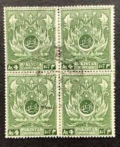 |
| vividagallery.com | Pakistan Emblem Annas Green Floral Urdu Islamic Art Independence Bath Towel by Vivida Gallery - Vivida Gallery | 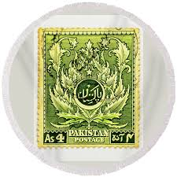 |
| esam.ir | تمبر کلاسیک ارزشمند پاکستان | 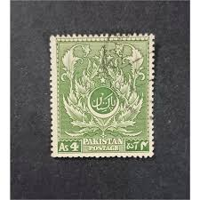 |
| eBay UK | PAKISTAN, 4TH ANNIVERSARY OF INDEPENDENCE 4As 6As POSTAGE STAMPS(SET), RARE 1951 | eBay UK | 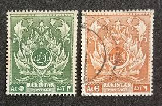 |
| Pakistani Philately | 14th August, 1951 #stamps #postage #postalhistorry #pakistan | 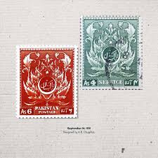 | |
| PicClick DE | BRIEFMARKEN STAMPS PAKISTAN gestempelt 1 Wert mit schwarzer Aufschrift "1 PAISA" EUR 1,05 - PicClick DE | 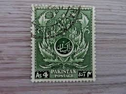 |
| HipStamp | PAKISTAN, SERVICE, 1951 4th. Anniversary Independence, 4a. Green, corner block 4 | Asia - Pakistan, Stamp / HipStamp | 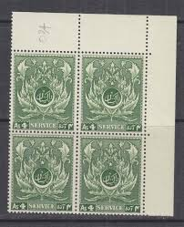 |
| vividagallery.com | Pakistan Emblem Annas Green Floral Urdu Islamic Art Independence Beach Towel by Vivida Gallery - Vivida Gallery | 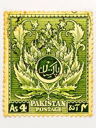 |
| eBay | EDSROOM-19260 Pakistan 58, 60 MNH 1951 CV$6.25 | eBay | 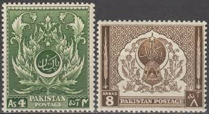 |
| Are these worth anything? : r/askStampCollectors | ||
| Dreamstime.com | Vintage Arabic Oriental Cafe. Restaurant Farsha - Place To Relax on Beach Ras Umm El Sid of Red Sea Editorial Stock Image - Image of location, beach: 242317914 | |
| Todocolección | paquistan 1951, yvert 58 - Compra venta en todocoleccion | |
| vividagallery.com | Pakistan Emblem Annas Green Floral Urdu Islamic Art Independence Framed Print by Vivida Gallery - Vivida Gallery | |
| Todocolección | pakistan 1954 - montaña, paisajes - paisaje cer - Buy Stamps from other Asian countries on todocoleccion | |
| eBay | Pakistan Foreign As 4 Stamp Used - #A865 | eBay | |
| vividagallery.com | Pakistan Emblem Annas Green Floral Urdu Islamic Art Independence Ornament by Vivida Gallery - Vivida Gallery | |
| philaforum.com | Pakistan Marke identisch mit Service ? - Identifizierung und Wertbestimmung von Briefmarken - PHILAFORUM.COM Briefmarkenforum | |
| Bob Shop | Pakistan - Pakistan - 1951 - Moslem Leaf Pattern - 2 Used hinged stamps was listed for 0.00 on 30 Sep at 18:16 by Klaas47 in Cape Town (ID:655037722) | |
| customscene.co | Yellow Postal Stamp - Custom Scene |